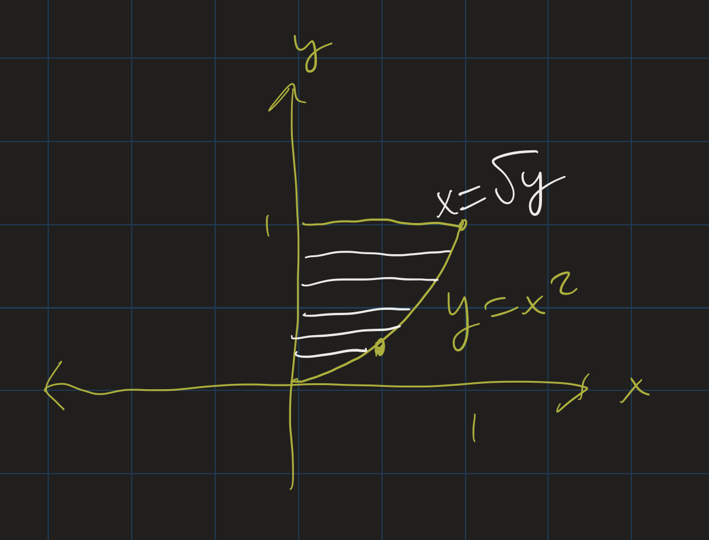

Professor Abdul-Quader
18 March 2021

In breakout rooms, look at the following problems:
For each problem:
Formula:
\[ s = \int_a^b \sqrt{1 + (f^\prime)^2 } dx \]
The path of a rock thrown off a 100 meter cliff (approximately) follows the curve \(f(t) = 100 - 5t^2\), from \(t = 0\) to \(t = \sqrt{20}\) seconds. Find the length of the path the rock travels from \(t = 0\) to \(t = \sqrt{20}\). Round your answer to the nearest hundredth of a meter.
Arc length of \(f(t) = 100 - 5t^2\) from \(t = 0\) to \(t = \sqrt{20}\). Round your answer to the nearest hundredth of a meter.
\[ \begin{align} f^\prime(x) = -10x \\ (f^\prime(x))^2 = 100x^2 \\ \int_0^{\sqrt{20}} \sqrt{1 + 100x^2}dx \end{align} \]
WolframAlpha: \(\approx 100.25\) meters.
Before we move on:
We have a differential equation:
\[m^\prime(t) = .05 m(t)\]
What functions are proportional to their own derivatives?
Exponential functions! Guess \(m(t) = Ae^{kt}\), and use \(m^\prime\) and \(m(0)\) to find these constants \(A\) and \(k\).
\[ \begin{align} m(t) &= Ae^{kt} \\ m^\prime(t) &= Ake^{kt} \\ &= .05 m(t) \\ &= .05 Ae^{kt} \\ k &= .05 \end{align} \]
Find \(A\)?
\[ \begin{align} Ae^{0} = 2 \\ A = 2 \end{align} \]
Solution:
The order of a differential equation is the highest derivative that appears in the equation. Identify the orders of the following:
We will mostly focus on first-order differential equations, but some simple higher order differential equations can be solved.
A ball is thrown straight into the air with an initial velocity of 5 meters per second. It is acted on by a constant, downward force of gravity, causing an acceleration of \(-9.8\) \(m/s^2\).
Since \(v^\prime(t) = a(t)\), and \(a(t) = -9.8\), we know:
So: \(v(t) = -9.8t + C\). Since \(v(0) = 5\), we can compute \(5 = -9.8(0) + C\), so \(C = 5\).
So our formula for the velocity is \(v(t) = -9.8t + 5\).
Going back to Calc I:
Therefore \(h(t) = -4.9t^2 + 5t + 2\). Then \(h(\frac{5}{9.8}) \approx 3.28\) meters.
This is basically the exam 1 extra credit problem.